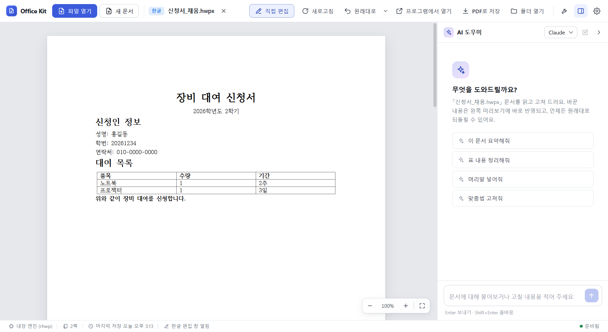
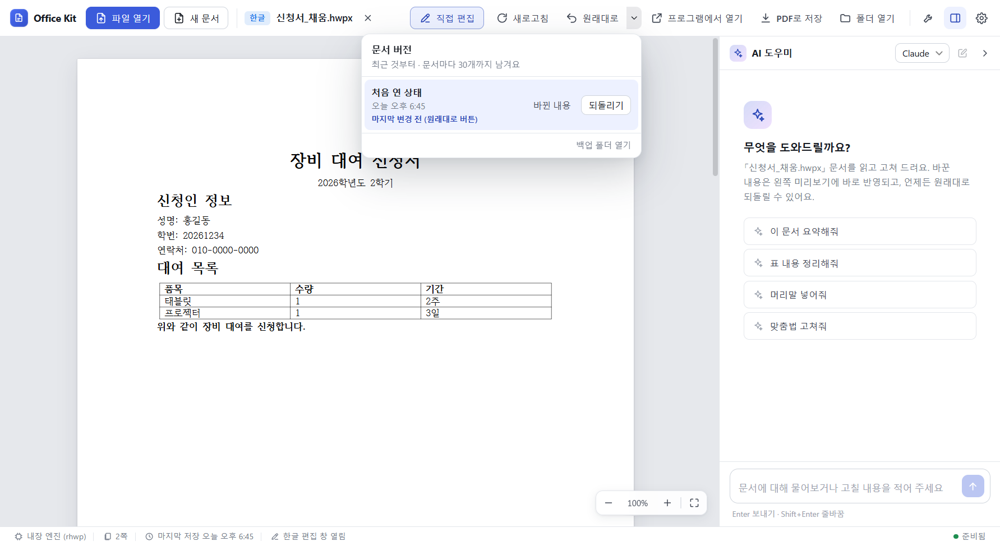
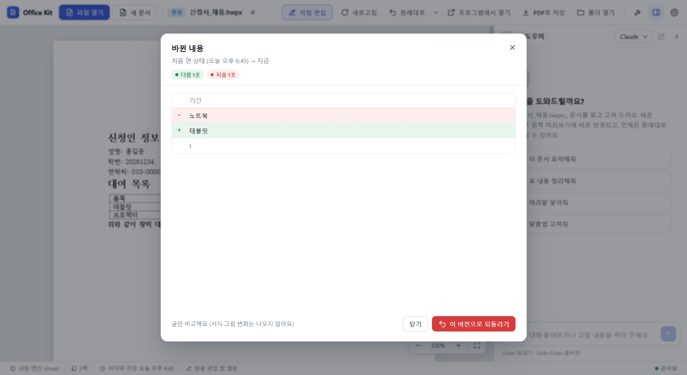
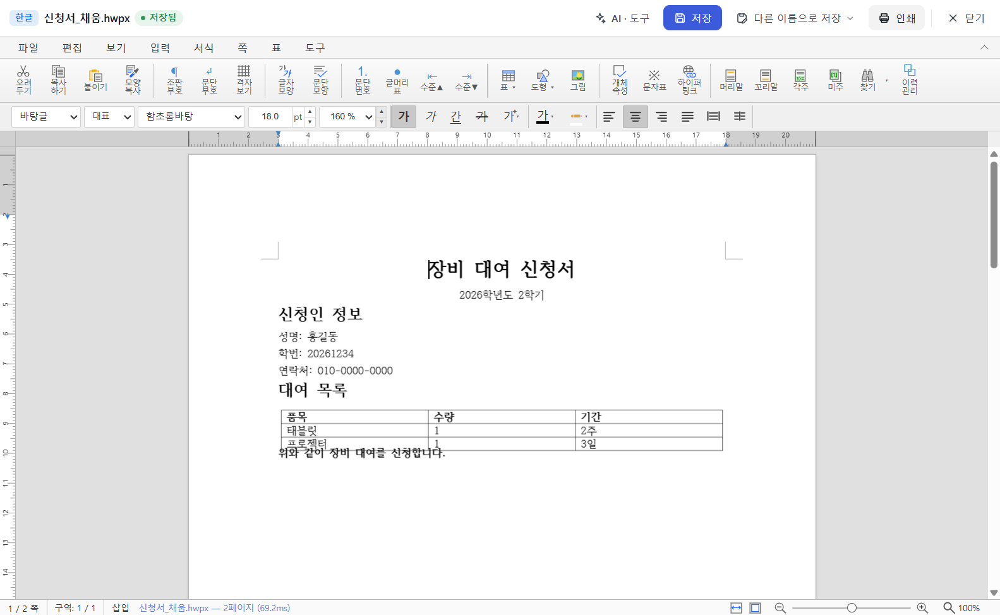
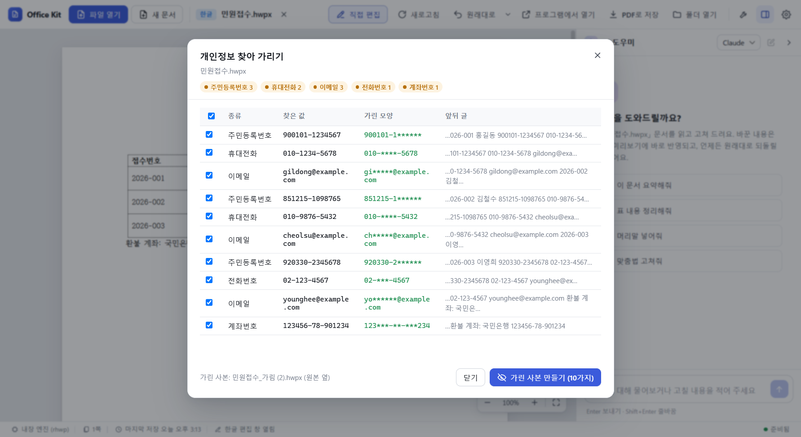
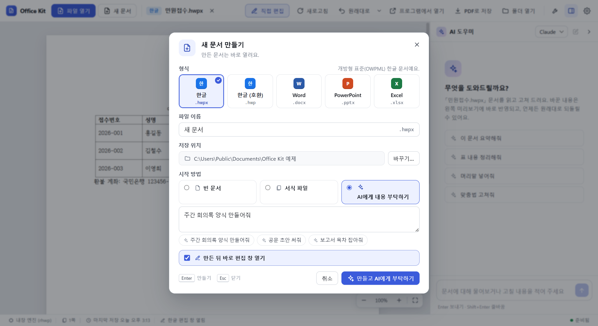
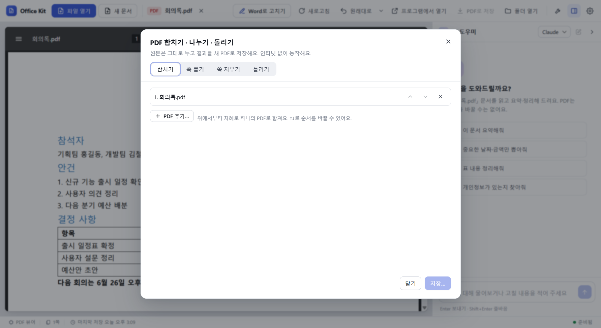
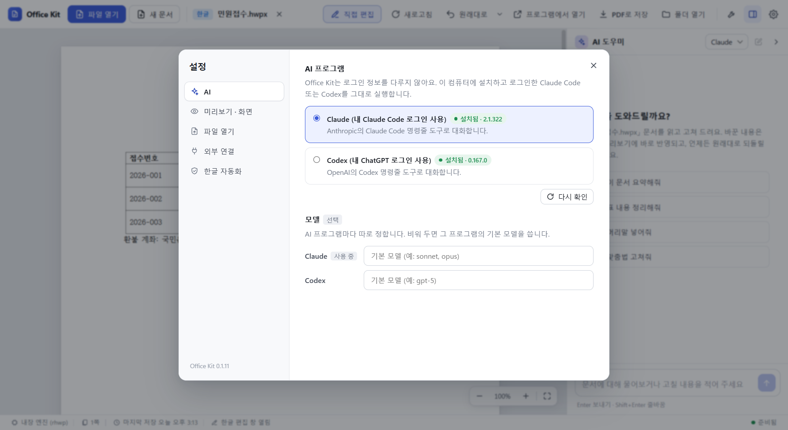
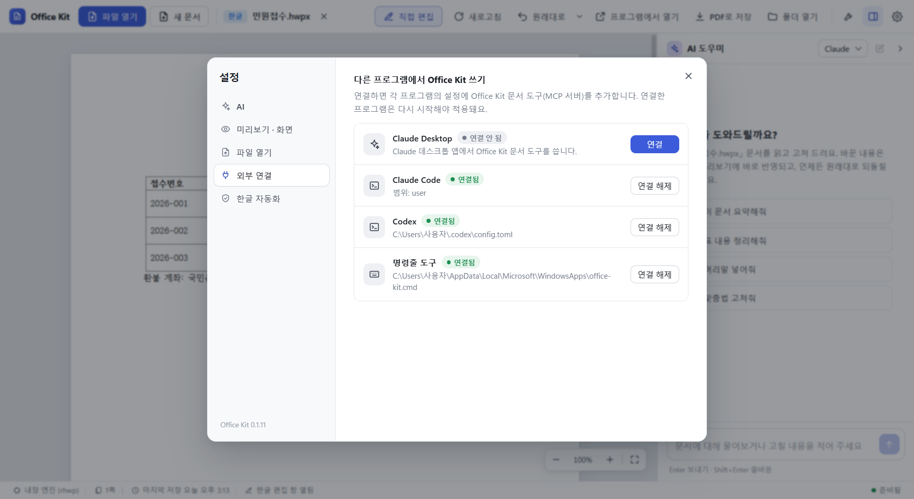

기능 안내
실제 화면에 번호를 붙였습니다. 사진 위에 마우스를 올리면 번호가 흐려지고, 설명에 올리면 그 번호만 보입니다. 번호 없이 보려면 크게 보기를 누르세요.
주 창
문서를 열면 왼쪽에 미리보기, 오른쪽에 AI 도우미가 뜹니다. 위쪽 막대에 자주 쓰는 일이 모여 있습니다.

- 파일 열기 문서를 고릅니다(Ctrl+O). 창에 파일을 끌어다 놓아도 됩니다.
- 새 문서 한글·Word·PowerPoint·Excel 새 문서를 만듭니다(Ctrl+N).
- 열린 문서 형식과 파일 이름. 오른쪽 ✕로 문서를 닫습니다.
- 직접 편집 앱 안 편집 창을 엽니다(Ctrl+E). 인터넷과 한컴오피스·MS Office 없이 동작합니다.
- 새로고침 미리보기를 파일에서 다시 그립니다(F5).
- 원래대로 마지막 변경 전으로 되돌립니다. 한 번 더 누르면 되돌리기 전으로 돌아갑니다.
- 버전 목록 남겨 둔 버전을 보고, 바뀐 내용을 비교하거나 그때로 되돌립니다.
- 프로그램에서 열기 설치된 Word·Excel·PowerPoint·한컴오피스에서 엽니다.
- PDF로 저장 지금 문서를 PDF로 저장합니다. 한글 문서는 한컴오피스 없이도 됩니다.
- 폴더 열기 문서가 있는 폴더를 탐색기로 엽니다.
- 도구 개인정보 찾아 가리기, PDF 합치기·나누기·돌리기, 한글→HWPX 일괄 변환.
- AI 창 열고 닫기 오른쪽 AI 도우미를 보이거나 숨깁니다.
- 설정 AI 프로그램, 화면 언어, 파일 열기 방식, 외부 연결을 정합니다(Ctrl+,).
- AI 고르기 내 PC에 로그인해 둔 Claude Code 또는 Codex 중 하나를 고릅니다.
- 새 대화 지난 대화를 접고 새로 시작합니다.
- 추천 요청 누르면 바로 보냅니다. 형식에 맞는 요청이 나옵니다.
- 입력창 할 일을 적고 Enter로 보냅니다. 줄바꿈은 Shift+Enter.
- 확대·축소 미리보기 배율. 가운데 숫자를 누르면 100%, 오른쪽은 너비에 맞추기.
- 상태 줄 읽은 엔진, 쪽 수, 마지막 저장 시각, 편집 창이 열려 있는지 보여 줍니다.
버전과 되돌리기
문서를 열 때, 편집 창에서 저장하기 전, AI가 고치기 전마다 버전을 저절로 남깁니다. 문서마다 최근 30개까지 남습니다.

- 버전 목록 열기 원래대로 옆 ▾를 누릅니다.
- 버전 하나 언제, 어떤 일 전에 남았는지 보여 줍니다.
- 바뀐 내용 그 버전 뒤로 바뀐 글을 비교합니다(아래 그림).
- 되돌리기 문서를 그 버전으로 돌립니다. 되돌리기 전 상태도 버전으로 남습니다.
- 백업 폴더 열기 버전 파일이 있는 폴더를 엽니다.
바뀐 내용 보기
글이 어떻게 바뀌었는지 줄 단위로 보여 줍니다. 엑셀은 칸 주소와 전·후 값을 보여 줍니다.

- 비교 범위 어느 버전과 지금을 비교하는지.
- 요약 더한 곳과 지운 곳의 수.
- 바뀐 줄 지운 글은 빨강(−), 더한 글은 초록(+). 서식과 그림 변화는 나오지 않습니다.
- 이 버전으로 되돌리기 비교한 버전으로 문서를 돌립니다.
AI 대화
할 일을 말로 적으면 AI가 Office Kit 문서 도구로 고칩니다. 고친 결과는 미리보기에 바로 보이고, 대화마다 되돌릴 수 있습니다.

- 내 요청 보낸 말이 오른쪽 말풍선으로 남습니다.
- AI가 쓴 도구 문서 읽기, 칸 채우기, 찾아 바꾸기처럼 AI가 실제로 한 일입니다.
- 결과 설명 무엇을 바꿨는지 짧게 알려 줍니다.
- 바뀐 내용 보기 이 대화로 바뀐 글을 비교합니다.
- 이 대화 전으로 되돌리기 대화가 고친 것을 한 번에 되돌립니다.
- 진행 표시 AI가 일하는 중이면 지금 하는 일이 보입니다.
- 멈추기 AI 작업을 멈춥니다.
한글 편집 창
한글 문서(hwp, hwpx)를 앱 안에서 고칩니다. 한컴오피스가 없어도 되고, 저장하면 원래 형식 그대로 씁니다.

- 문서 상태 형식, 파일 이름, 저장됨 또는 저장 안 됨.
- AI · 도구 옆에 AI 대화, 버전, 개인정보 가리기를 붙여 엽니다.
- 저장 원래 형식 그대로 저장합니다(Ctrl+S). 덮어쓰기 전 내용은 백업으로 남습니다.
- 다른 이름으로 저장 hwpx, hwp, PDF로 저장합니다(Ctrl+Shift+S).
- 인쇄 Windows 인쇄 창을 엽니다(Ctrl+P).
- 닫기 저장 안 한 내용이 있으면 먼저 묻습니다(Ctrl+W).
- 편집 메뉴 파일·편집·보기·입력·서식·쪽·표·도구. 한글과 비슷한 배치입니다.
- 서식 도구줄 글꼴, 크기, 굵게, 정렬 같은 자주 쓰는 서식.
Word, Excel, PowerPoint 편집 창
docx, xlsx, pptx 문서를 앱 안에서 고칩니다. Microsoft Office 없이, 이 PC의 글꼴로 동작합니다.

- 문서 상태 형식(문서·표·슬라이드), 파일 이름, 저장 상태.
- AI · 도구 옆에 AI 대화와 도구를 붙여 엽니다.
- 저장 원래 형식 그대로 저장합니다(Ctrl+S).
- 정보 · 라이선스 편집기의 원 개발사, 라이선스, 이 판의 소스 주소.
- 편집기 메뉴 파일·홈·삽입·레이아웃 같은 편집 기능.
- 고지 줄 편집기 출처와 라이선스를 늘 보여 줍니다.
개인정보 찾아 가리기
문서에서 개인정보를 찾아, 고른 것만 가린 사본을 원본 옆에 만듭니다. 인터넷과 AI 없이 이 PC에서만 동작합니다.

- 찾은 종류 종류별로 몇 개 찾았는지.
- 고르기 가릴 것만 고릅니다. 맨 위 칸은 모두 고르기.
- 찾은 값 문서에 있는 그대로의 값.
- 가린 모양 사본에서 바뀔 모양.
- 앞뒤 글 어디서 찾았는지 확인용 문맥.
- 가린 사본 만들기 원본은 그대로 두고 <이름>_가림 사본을 만든 뒤, 남은 것이 없는지 다시 읽어 확인합니다.
새 문서
형식과 이름, 시작 방법을 고르면 바로 열립니다.

- 형식 한글(hwpx), 한글 호환(hwp), Word, PowerPoint, Excel.
- 파일 이름 같은 이름이 있으면 바꿀 이름을 알려 줍니다.
- 저장 위치 열린 문서의 폴더가 기본입니다. 바꾸기로 다른 곳을 고릅니다.
- 시작 방법 빈 문서, 서식 파일(회의록·기안문·이력서·예산표 등), AI에게 부탁하기.
- AI 요청 만들 내용을 적습니다. 아래 예시를 눌러도 됩니다.
- 바로 편집 창 만든 뒤 편집 창을 바로 엽니다.
- 만들기 문서를 만들고, AI 요청이 있으면 이어서 AI가 채웁니다.
PDF 합치기, 나누기, 돌리기
원본은 그대로 두고 결과를 새 PDF로 저장합니다. 인터넷 없이 동작합니다.

- 작업 고르기 합치기, 쪽 뽑기(예: 1-3,5), 쪽 지우기, 돌리기.
- 파일 목록 위에서부터 차례로 합칩니다. ↑↓로 순서를 바꾸고 ✕로 뺍니다.
- PDF 추가 합칠 PDF를 더합니다.
- 저장 새 PDF로 저장합니다.
설정 · AI
AI 대화에 쓸 프로그램을 고릅니다. Office Kit은 로그인 정보를 다루지 않고, 내 PC에 설치·로그인한 프로그램을 그대로 실행합니다.

- 설정 메뉴 AI, 미리보기·화면(화면 언어 포함), 파일 열기, 외부 연결, 한글 자동화.
- Claude 내 Claude Code 로그인을 씁니다. 설치되어 있으면 버전이 보입니다.
- Codex 내 ChatGPT 계정으로 로그인한 Codex를 씁니다.
- 다시 확인 설치·로그인 상태를 다시 찾습니다.
- 모델 비워 두면 각 프로그램의 기본 모델을 씁니다.
설정 · 외부 연결
Claude Desktop, Claude Code, Codex에 Office Kit 문서 도구(MCP)를 연결하거나, 터미널에서 office-kit 명령을 쓰게 합니다.

- Claude Desktop 연결을 누르고 Claude Desktop을 다시 시작하면 문서 도구가 생깁니다.
- Claude Code 사용자 범위로 연결합니다. 연결 해제로 뺍니다.
- Codex Codex 설정 파일에 문서 도구를 더합니다. 고칠 때마다 백업을 남깁니다.
- 명령줄 도구 새 터미널부터 office-kit 명령을 쓸 수 있습니다.